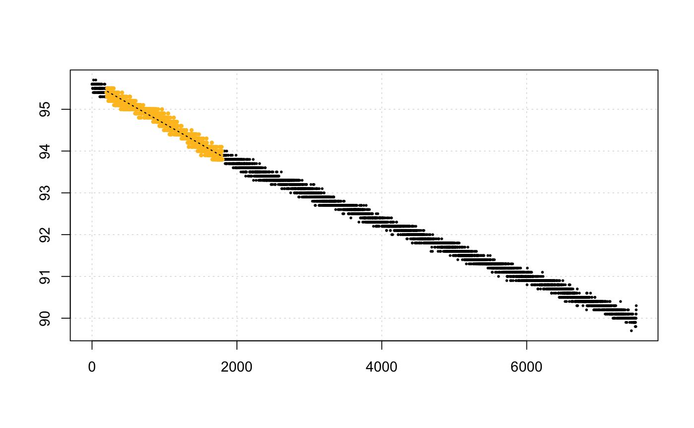

This is a conversion function. It can convert a dimensionless unit of rate,
derived from calc_rate, calc_rate.ft, auto_rate, or adjust_rate into
volume-adjusted (i.e. to the container), VO_2 or mass-specific (i.e. to the
specimen mass), MO_2 rate.
convert_rate(x, o2.unit = NULL, time.unit = NULL, output.unit = NULL, volume = NULL, mass = NULL, S = 35, t = 25, P = 1.013253)
| x | numeric, or objects of class |
|---|---|
| o2.unit | string. The dissolved oxygen unit of the data used to
determine rate. Check |
| time.unit | string. The time unit of the data used to determine rate.
Check |
| output.unit | string. The output unit to convert rate to. Check
|
| volume | numeric. Volume in litres. This is the volume of fluid in the respirometry chamber, not the specimen volume. |
| mass | numeric. Mass/weight in kg. This is the mass of the specimen if you wish to calculate mass-specific rates. |
| S | numeric. Salinity. Defaults to 35. Used only in conversion of % data. |
| t | numeric. Temperature. Defaults to 25 (°C). Used only in conversion of % data. |
| P | numeric. Pressure. Defaults to 1.013253 (bar). Used only in conversion of % data. |
A list object.
The function uses an internal database and a fuzzy string matching algorithm to accept various unit formatting styles.
For example, 'mg/l', 'mg/L', 'mgL-1', 'mg l-1', 'mg.l-1' are all the same.
Use unit_args() to view a list of usable unit strings.
Output units (output.unit) must be in the sequence O2-Time (e.g. mg/h,
mg-h) for volumetric rates, and for mass-specific rates O2-Time-Mass (e.g.
mg/h/kg).
# Manually enter values convert_rate(7.5, o2.unit = 'mg/l', time.unit = 's', output.unit = 'mg/min/kg', volume = 1.2, mass = 0.5)#> Input: #> [1] 7.5 #> [1] "mg/L" "sec" #> Output: #> [1] 1080 #> [1] "mg/min/kg"convert_rate(x, o2.unit = '%', time.unit = 's', output.unit = 'mg/h/g', volume = 12.3, mass = 0.05, S =35, t = 15, P = 1.013)#> Input: #> [1] -0.0009793698 #> [1] "%" "sec" #> Output: #> [1] -0.07044579 #> [1] "mg/hour/g"